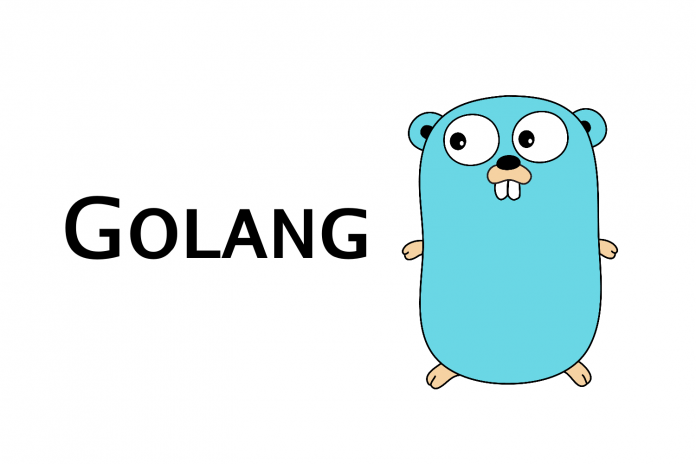
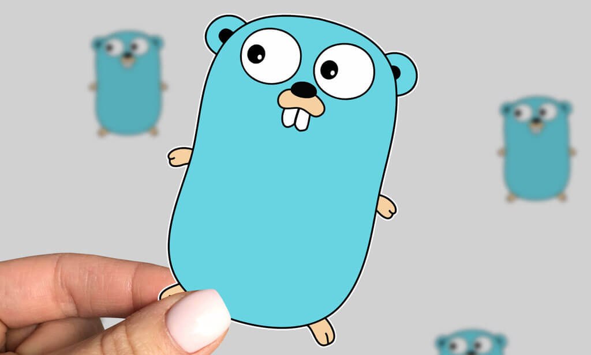

Một số tính năng nổi bật của Ngôn ngữ lập trình Golang
Golang là gì ?
Sau 8 năm hoạt động, ngôn ngữ Go của Google ra mắt phiên bản 1.8.1 vào tháng 4 năm 2017 được lựa chọn bởi các chuyên gia lập trình để trở thành ngôn ngữ lập trình dành cho những dự án cloud-centric quan trọng nhất thế giới.
Tại sao Go được chọn bởi các nhà phát triển của những dự án như Docker và Kubernetes? Đặc điểm của Go là gì?, nó khác gì với các ngôn ngữ lập trình khác và phù hợp cho loại dự án nào nhất? Trong bài này, chúng ta sẽ khám phá những tính năng của Go, trường hợp tối ưu, điểm thiếu sót và hạn chế của Golang.

Go nhỏ gọn và đơn giản
Go hay Golang là sản phẩm được phát triển bởi các nhân viên của Google, đặc biệt là kỹ sư nổi tiếng của Google, một chuyên gia về Unix, ông Rob Pike, tuy nhưng đó không phải là một dự án của Google. Thay vào đó, Go được phát triển như một dự án open source.
Go đơn giản để học, dễ làm việc và dễ dàng đọc bởi các nhà phát triển khác. Và Go không hề có một bộ tính năng lớn, đặc biệt là khi so sánh với các ngôn ngữ như C ++. Ngoài ra Go còn gợi nhớ đến C bởi cú pháp của nó, điều đó giúp các lập trình viên C lâu năm tương đối dễ dàng học nó. Điều đó nói rằng, nhiều tính năng của Go, đặc biệt là tính năng concurrency.
Tương tự như ngôn ngữ C được dùng để xây dựng và duy trì các ứng dụng cross-platform, thì Go cũng có nhiều điểm chung với Java. Và như một phương tiện cho phép lập trình một cách nhanh chóng mà có thể chạy ở bất cứ nơi nào, thì bạn có thể tưởng tượng Go và Python giống nhau ở điểm này, mặc dù giữa chúng có nhiều điểm khác biệt hơn là tương đồng.
Dành cho tất cả mọi người
Tài liệu về Go, mô tả Go là “một ngôn ngữ biên dịch nhanh, static type, compiled language (ngôn ngữ biên dịch), nhưng lại giống như một dynamic, interpreted language (ngôn ngữ thông dịch)”. Ngay cả khi một chương trình Go lớn, cũng sẽ được biên dịch chỉ trong vòng vài giây. Thêm vào đó, Go còn tránh được những điểm hạn chế của C liên quan đến các file và thư viện. Nói tóm lại, Go giúp cuộc sống của lập trình viên trở nên dễ dàng bằng nhiều cách:
Tiện lợi: Go được so sánh với các scripting language (ngôn ngữ kịch bản) như Python với khả năng đáp ứng nhiều nhu cầu lập trình phổ biến. Một số tính năng này được tích hợp vào trong chính ngôn ngữ, chẳng hạn như “goroutines” là một hàm cho concurrency và kiểu giống như behavior, ngoài ra các tính năng bổ sung được có sẵn trong các package thư viện Go chuẩn, như http package của Go. Giống như Python, Go cung cấp khả năng quản lý bộ nhớ tự động bao gồm việc garbage collection (dọn file rác).
Không giống các ngôn ngữ kịch bản như Python, Go biên dịch (compile) code ra nhị phân một cách nhanh chóng. Và không giống như C hoặc C ++, Go biên dịch cực nhanh, nhanh đến mức khiến bạn cảm thấy khi làm việc với Go giống như là làm việc với một ngôn ngữ kịch bản hơn là một ngôn ngữ biên dịch. Hơn nữa, hệ thống Go build đơn giản hơn so với các ngôn ngữ biên soạn khác. Phải trải qua một vài bước và lập kế hoạch để xây dựng và vận hành một dự án Go.
Tốc độ: Run nhị phân chậm hơn so với C, nhưng sự khác biệt về tốc độ này không đáng kể đối với hầu hết các ứng dụng. Hiệu suất của Go tốt ngang với C trong phần lớn công việc và nói chung là nhanh hơn so với các ngôn ngữ khác nổi tiếng về tốc độ (ví dụ: JavaScript, Python và Ruby).
Linh hoạt: Các file executable được tạo bằng toolchain của Go có thể hoạt động độc lập mà không cần external dependencies mặc định. Toolchain hỗ trợ cho nhiều hệ điều hành, hardware platform (chuẩn phần cứng của máy tính) khác nhau và có thể được sử dụng để biên dịch các chương trình nhị phân qua các nền tảng.
Khả năng tương thích: Go cung cấp tất cả những điều trên mà không bị mất quyền truy cập vào hệ thống bên dưới (underlying system). Phương mềm Go có thể liên kết với thư viện C bên ngoài hoặc thực hiện các lệnh call hệ thống native. Ví dụ trong Docker, Go interface với các chức năng Linux low-level, cgroups và namespace (tạm dịch: không gian tên), để hoạt động với container.
Hỗ trợ: Toolchain Go có sẵn dưới dạng binary của Linux, MacOS hoặc Windows hoặc như là một container trong Docker. Go được đặt mặc định trong nhiều bản phát hành phổ biến của Linux, như Red Hat Enterprise Linux và Fedora, giúp cho việc triển khai Go source trở nên dễ dàng hơn đối với các nền tảng trên. Go cũng hỗ trợ mạnh mẽ cho nhiều development environment (môi trường phát triển) của bên thứ ba, từ Microsoft Visual Studio Code đến Komodo IDE của ActiveState.
Go tốt nhất cho việc gì?
Không có ngôn ngữ nào phù hợp với mọi loại công việc, nhưng có một số ngôn ngữ phù hợp với nhiều mục đích hơn những ngôn ngữ khác. Mạnh mẽ khi phát triển một số loại ứng dụng chính:
Phân phối các network service (dịch vụ mạng).
Các chương trình ứng dụng mạng (network application) sống hay chết là dựa vào concurrency và các tính năng native concurrency của Go, các goroutines và các channel, rất phù hợp cho các tác vụ đó. Do đó, có nhiều dự án Go dành cho mạng, các chức năng distributed (phân phối) và dịch vụ đám mây: API, web server, minimal frameworks cho các web application và các loại tương tự.
Sự phát triển của cloud-native.
Các tính năng concurrency và network của Go và tính linh hoạt cao của nó làm cho nó phù hợp với việc xây dựng các ứng dụng cloud-native. Trên thực tế, Go đã được sử dụng để xây dựng một trong những nền tảng phát triển ứng dụng dựa trên cloud-native, ứng dụng hệ thống containerization Docker.
Thay thế cho cơ sở hạ tầng hiện có.
Phần lớn các phần mềm của chúng tôi phụ thuộc vào cơ sở hạ tầng Internet đã lạc hậu. Việc viết lại những thứ như vậy bằng Go mang lại nhiều lợi ích, như giữ an toàn bộ nhớ tốt hơn, triển khai trên nhiều nền tảng dễ dàng hơn và một code base “sạch” để hỗ trợ bảo trì trong tương lai. Một server SSH mới được gọi là Teleport và một phiên bản mới của Network Time Protocol được viết bằng Go, được cung cấp như phương pháp thay thế cho các đối tác thông thường của họ.
Go không phù hợp với việc gì?
Go được thiết kế nhỏ gọn và dễ hiểu, vì vậy dẫn đến một số tính năng nhất định bị bỏ qua. Thế nên một số tính năng phổ biến có trong các ngôn ngữ khác thì lại không có trong Go.
Một trong những tính năng Go không có là generics, là kiểu biểu diễn của Types dưới dạng tham số khi định nghĩa lớp, hàm và interfaces. Go không bao gồm generics và steward của ngôn ngữ này ngăn cản việc thêm generics vào vì cho rằng điều đó sẽ làm giảm tính đơn giản. Tuy vẫn có thể làm việc tốt với Go, nhưng rất nhiều lập trình viên vẫn muốn thêm generics vào nó.
Nhược điểm khác của Go là kích thước của các chương trình. Code được biên dịch kiểu static (tĩnh) theo mặc định. Cách này làm đơn giản hóa quá trình xây dựng và triển khai, nhưng dẫn đến việc chỉ một đoạn code đơn giản “Hello, world!” lại nặng đến khoảng 1,5MB trên Windows 64-bit. Nhóm nghiên cứu của Go đang cố gắng để giảm kích thước của những chương trình này trong những bản phát hành kế tiếp. Có những giải pháp cho việc này là nén file hoặc xoá bỏ thông tin về debug của Go.
Tuy nhiên, một tính năng khác của Go, quản lý bộ nhớ tự động (AMM), có thể được xem như là một nhược điểm, vì garbage collection (quá trình thu gom file rác) đòi hỏi một số memory nhất định để xử lý. Theo thiết kế, Go không thể quản lý bộ nhớ bằng tay và việc dọn dẹp file rác ở Go bị chỉ trích là không thể giải quyết tốt các loại memory load (bộ nhớ tải) xuất hiện trong các ứng dụng của doanh nghiệp. Xét về mặt tích cực, Go 1.8 mang lại nhiều cải tiến trong quản lý bộ nhớ và dọn dẹp file rác để giảm độ trệ (lag). Tất nhiên, các nhà phát triển Go có thể sử dụng phân bố (allocation) bộ nhớ bằng tay trong một extension của C hoặc bằng cách sử dụng thư viện quản lý bộ nhớ thủ công của bên thứ ba.
Tình hình xung quanh việc xây dựng một GUI (giao diện đồ họa người dùng) phong phú cho các ứng dụng của Go, chẳng hạn như trong các ứng dụng dành cho desktop, vẫn còn rải rác.
Hầu hết các sản phẩm từ Go là các command-line tool hoặc các dịch vụ network. Mặc dù vậy, vẫn có rất nhiều dự án đang được thực hiện để mang lại một GUI phong phú cho các ứng dụng của Go. Có các framework như GTK và GTK3. Một dự án khác nhằm cung cấp platform-native UI, mặc dù các giao diện này dựa vào các binding của C và không được viết bằng Go. Ngoài ra, bởi vì Go được thiết kế là nền tảng độc lập, nên không có bất kỳ cái gì được nêu ở trên có thể trở thành một phần của package chuẩn.
Mặc dù Go có thể tương tác với các chức năng của native system nhưng nó không được thiết kế để tạo ra các component của low-level system, chẳng hạn như kernel (hạt nhân) hoặc device driver hoặc các embedded system (hệ thống nhúng). Sau cùng, tốc độ run ứng dụng và trình dọn dẹp file rác cho các ứng dụng Go phụ thuộc vào hệ điều hành nằm bên dưới. (Các lập trình viên quan tâm đến một ngôn ngữ dành cho loại công việc này có thể tìm hiểu Rust của Mozilla.)
Đâu là con đường của Go?
Go có thể đang ở một “ngã ba đường”. Giai đoạn phát triển tiếp theo của Go có thể được thúc đẩy bởi nhu cầu phát triển cơ bản của nó, Go cần chú ý về việc thay đổi ngôn ngữ để có thể đáp ứng tốt hơn, chứ phải cứ cứng đầu mà không thay đổi. Nói cách khác, Go hoàn toàn có thể thêm các tính năng mà ban đầu nó không có, giống như generics.
Các lập trình viên sử dụng Golang rõ ràng muốn những điều này. Một cuộc khảo sát ý kiến người dùng Golang vào năm 2016 đã xác định được, generic là một trong những thay đổi mang tính cải thiện nhất, tiếp theo là dependency và package management. Những thay đổi này có thể giúp Go đạt một vị trí cao trong giới lập trình nơi mà Java, JavaScript và Python hiện đang thống trị .
Ngay cả khi không có bất kỳ sự thay đổi lớn nào đối với Go, thì tôi luôn mong được thấy Go sử dụng cho việc xây dựng lại cơ sở hạ tầng và trở thành một phần của dự án sử dụng multi-language (đa ngôn ngữ). Một dự án có sử dụng Go trong một phần của việc lập trình hệ thống đó là Ethos, một hệ điều hành như một phần mềm bảo mật chất lượng cao. Kernel được viết bằng C, nhưng userspace của ứng dụng được viết bằng Go, đây là một cách thông minh để tận dụng những gì phù hợp với C, trong khi vẫn có thể tận dụng các thế mạnh của Go.
Việc triển khai của bên thứ ba đối với công cụ Go cũng đang lan rộng. ActiveGo của ActiveState cung cấp một phiên bản được hỗ trợ về mặt thương mại của Golang và cả LLVM cùng các dự án gccgo được triển khai open source của Go bằng toolchain.
Một cách khác mà Go có thể phát triển là tồn tại như một nền tảng để phát triển các ngôn ngữ hoàn toàn mới khác. Một ví dụ là ngôn ngữ Have. Sử dụng nhiều ý tưởng từ Go và transpile vào Go để dễ thực hiện, nhưng tinh gọn cú pháp của Go và hiện thực hoá một số các concept tương tự những theo cách riêng. Một dự án khác có tên Oden, tiếc là không còn được phát triển, sử dụng assembler và toolchain của Go để biên dịch một ngôn ngữ mới được thiết kế dựa trên cảm hứng từ các ngôn ngữ khác như Lisp và Haskell.
Tương lai của Golang chỉ mới bắt đầu. Nhưng chắc chắn nó sẽ được sử dụng trong cloud, nơi mà tốc độ và sự đơn giản của nó giúp dễ dàng xây dựng một cơ sở hạ tầng có thể mở rộng, có thể được duy trì trong thời gian dài.